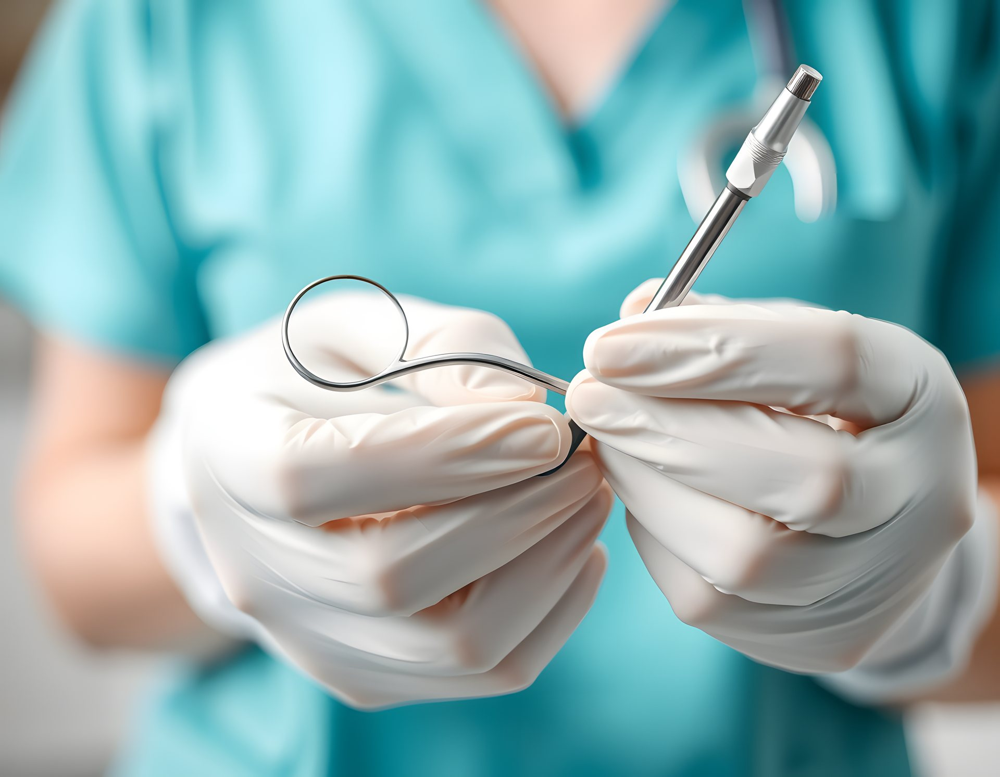
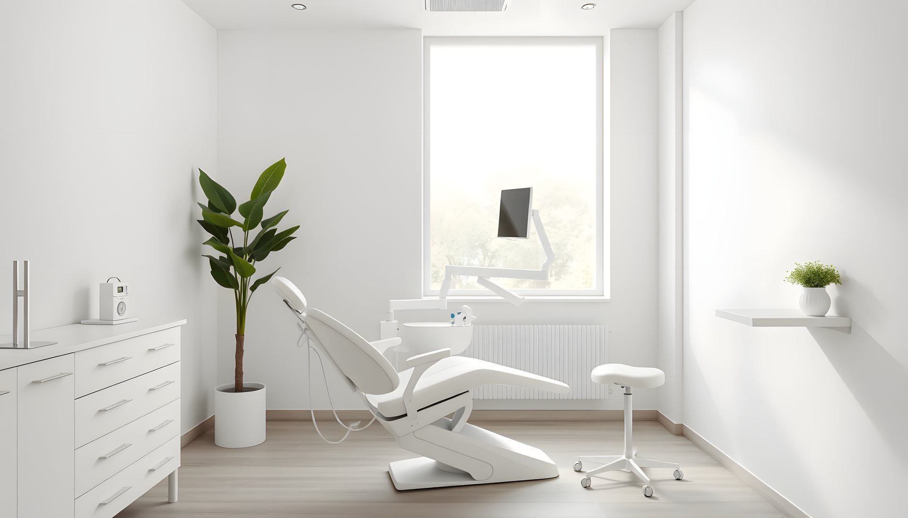
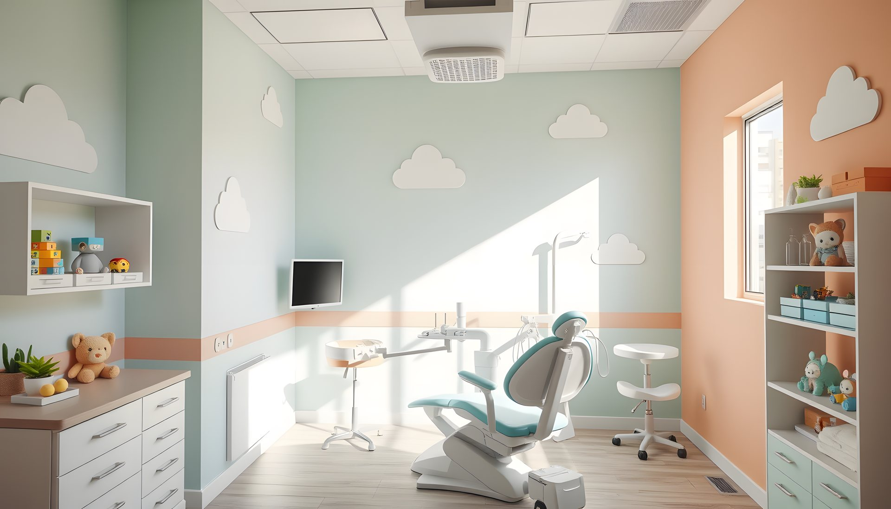
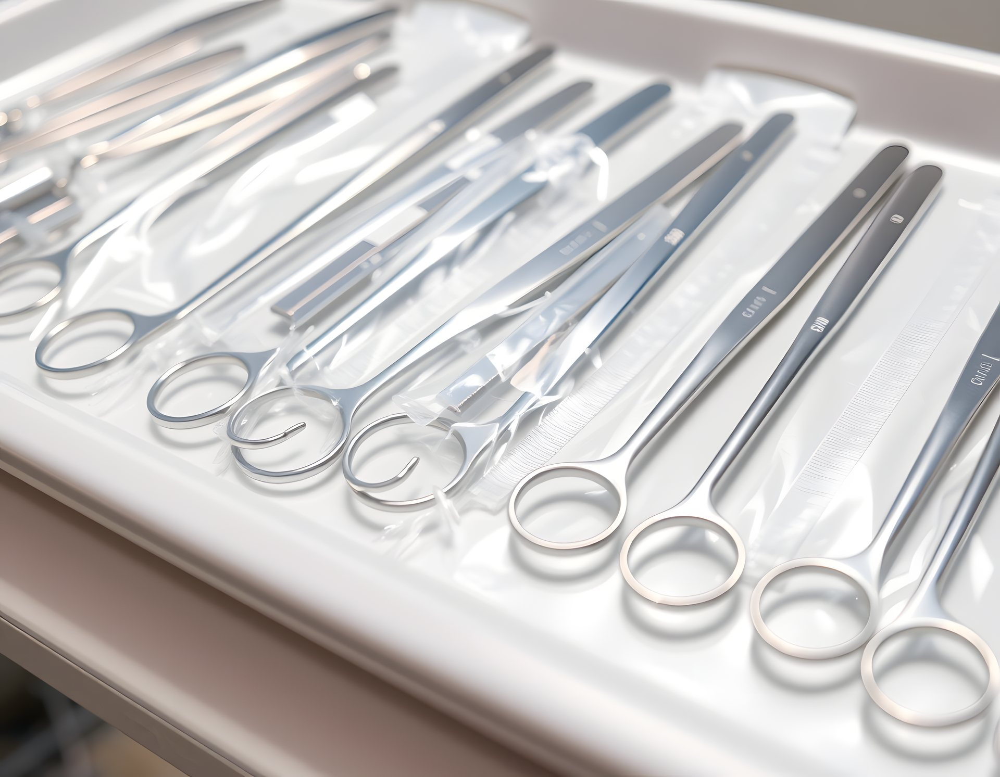
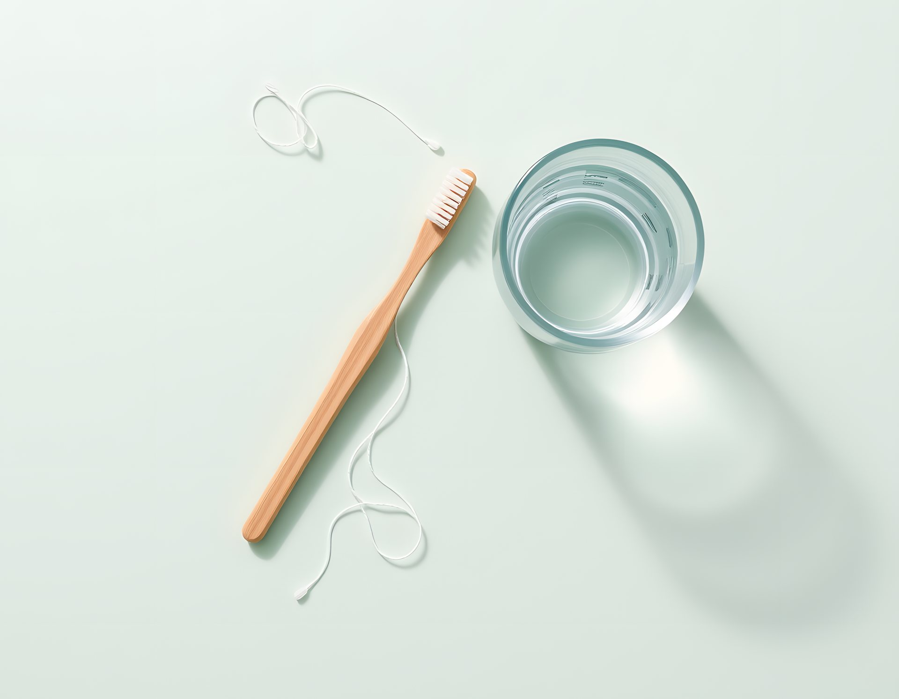

3–6 ay
İmplant
Eksik dişin yerine kemiğe yerleştirilen titanyum vida ve üzerine kron.
Muayeneden kontrole kadar her adımı önceden anlatıyoruz. Hangi tedavinin kaç seans süreceği, başlamadan önce yazılı planınızda.

Eksik dişin kökünün yerine, çene kemiğine yerleştirilir. Kemikle kaynaşması genellikle birkaç ay sürer; bu sürede geçici diş kullanılabilir.
Vidanın üstüne takılan bağlantı parçasıdır. Kronun doğru açıyla ve sağlam oturmasını sağlar.
Dişin görünen kısmıdır. Rengi ve formu komşu dişlerinize göre hazırlanır.
İmplant tedavisine uygunluk ve tedavi süresi, muayene ve görüntüleme sonrasında hekiminiz tarafından belirlenir.
Emin değilseniz sorun değil. İlk muayenede ağız içi muayene ve gerekli görüntüleme yapılır, seçenekler size anlatılır.

Eksik dişin yerine kemiğe yerleştirilen titanyum vida ve üzerine kron.
Metal içermeyen, ışığı doğal dişe benzer geçiren kaplama.
İltihaplanan dişi çekmeden korumayı amaçlar. Lokal anestezi altında yapılır.

Ayrı oda ve alışma seansıyla başlayan süreç.
Yüz hatlarınıza uygun diş formu dijital ortamda birlikte planlanır.
Diş eti sağlığı için düzenli yapılması önerilen profesyonel temizlik.
Formu doldurun ya da arayın; aynı gün size dönüş yapıyoruz.
Ağız içi muayene, gerekirse dijital röntgen.
Hangi tedavi, kaç seans, ne kadar sürecek — hepsi yazılı. Sorularınızı yanıtlıyoruz.
Tedavi tamamlanır, kontrol randevunuz planlanır.

Kurucu hekim · İmplant ve protez
Kanal tedavisi · Genel diş hekimliği
Çocuk hastalarla çalışma

Ağız içi muayene yapılır, gerekirse dijital röntgen çekilir. Ardından hekiminiz size uygun tedavi seçeneklerini ve seans planını anlatır.
Uygulamalar lokal anestezi altında yapılır. Kaygınız varsa muayenede hekiminize söyleyin; size uygun seçenekleri birlikte değerlendirirsiniz.
Anlaşmalı olduğumuz özel sağlık sigortalarını kabul ediyoruz. Poliçe bilgilerinizi randevudan önce iletmeniz yeterli.
Şiddetli ağrı, kırık diş ya da darbe durumunda lütfen önce telefonla arayın; size en kısa sürede yer açmaya çalışırız.
Formu bırakın, aynı gün sizi arayalım. Acil durumlar için doğrudan telefonla ulaşabilirsiniz.